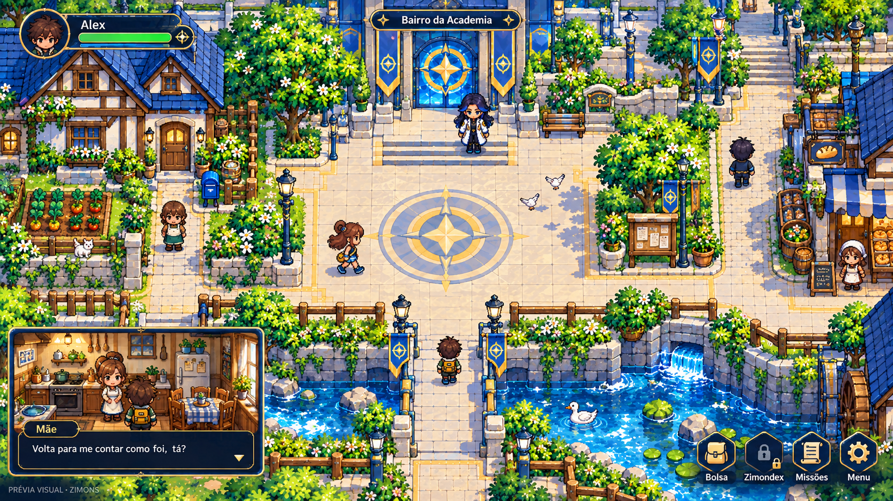
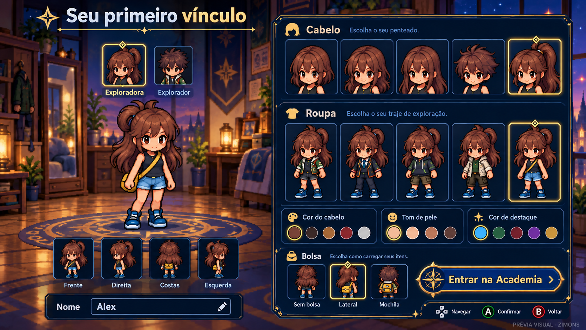
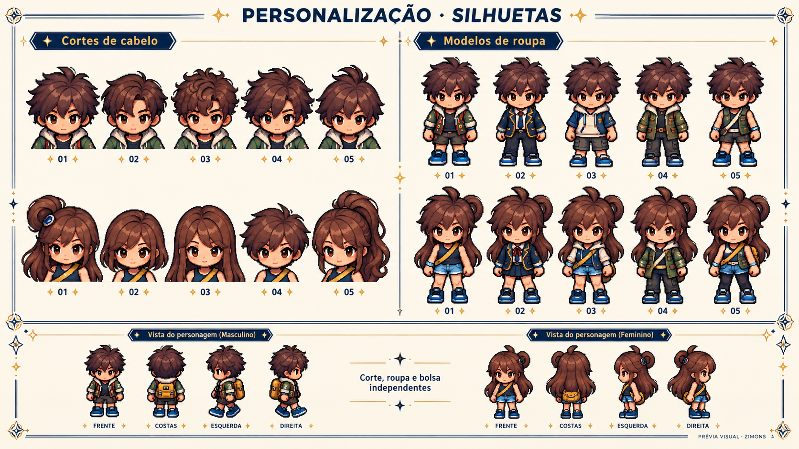
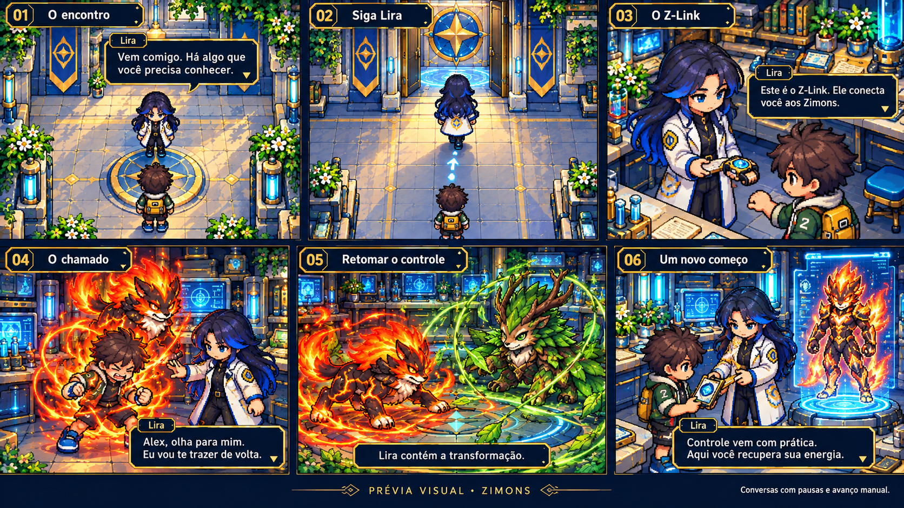
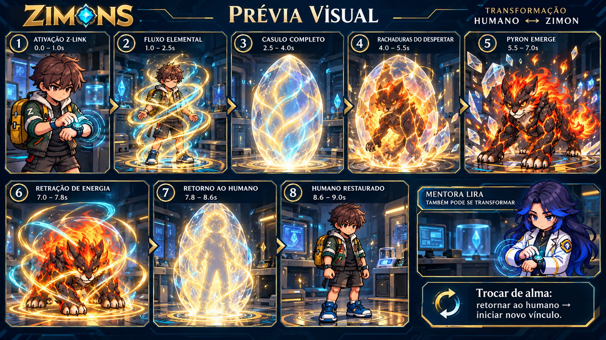
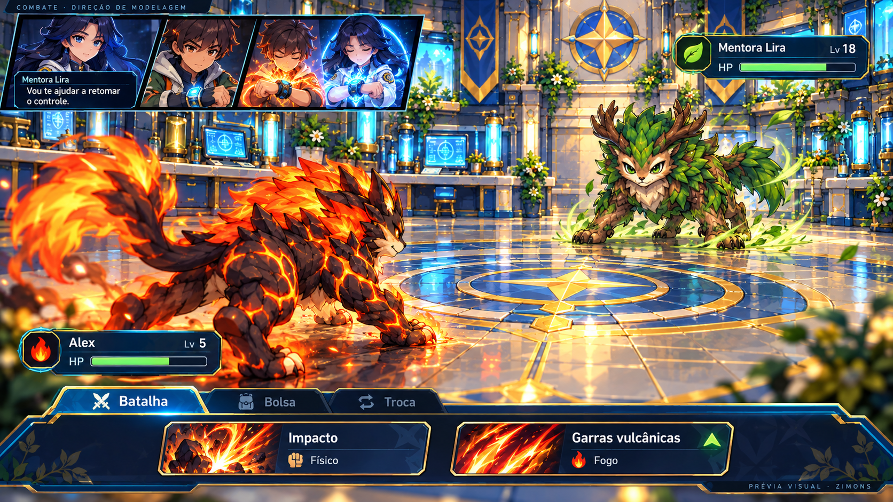
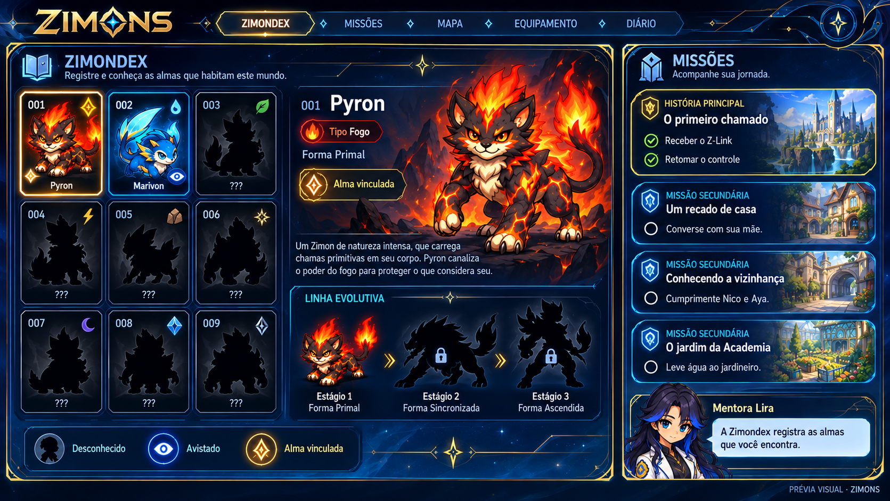
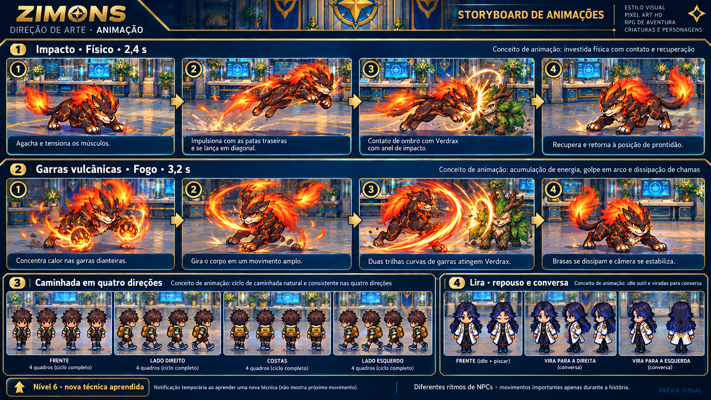
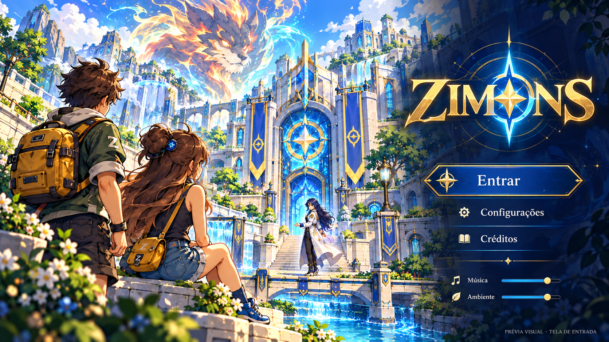

01 · Bairro, casa e HUD
Praça mais aberta, casa da família, vizinhos e caminhos conectados. Exploração no jogo permanece vista de cima e em quatro direções.
Baixar PNG
02 · Criação de personagem
Corte, roupa, bolsa e cores independentes. A aparência escolhida acompanha o personagem. Nenhum Z-Link antes da entrega.
Baixar PNG
03 · Cortes e modelos de roupa
Cinco cortes por gênero e cinco modelos de roupa. Silhuetas diferentes, sem usar faixas ou simples recolorações como substitutos.
Baixar PNG
04 · Lira, vínculo e possessão
Lira caminha até o laboratório durante a história, entrega o relógio e contém o primeiro vínculo descontrolado. Depois ensina recuperação e Zimondex.
Baixar PNG
05 · Transformação e retorno
Ativação no pulso, casulo completo, rachaduras e emergência. Proposta: 7–9 segundos para transformar e 3–4 para retornar; tempos impressos são rascunhos.
Baixar PNG
06 · Combate no laboratório
Câmera diagonal, humanos como identidades do HUD, ícones elementais, vantagem e pastas. Somente Impacto e uma técnica elemental no início; sem Defender.
Baixar PNG
08 · Zimondex e missões
Desconhecido em silhueta, avistado com olho, alma vinculada com selo próprio. Pequenas missões de conversa, família e vizinhança.
Baixar PNG
09 · Ataques e movimento
Poses de preparação, impulso, contato e retorno. Caminhada em quatro direções. Lira em repouso, piscando e virando para conversar.
Baixar PNG
10 · Tela de entrada
Wallpaper com os personagens aprovados e espírito elemental. Entrada, configurações, créditos e volumes separados de música e ambiente.
Baixar PNG